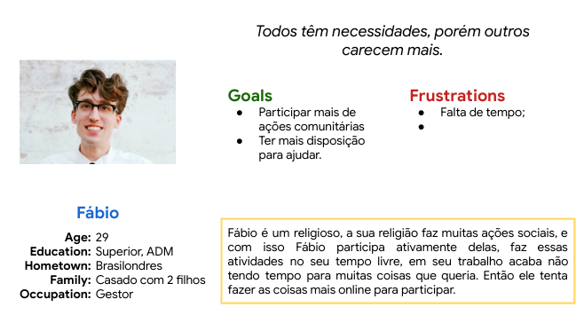
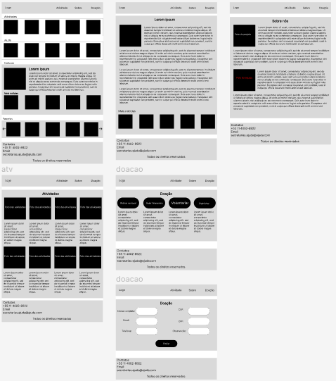
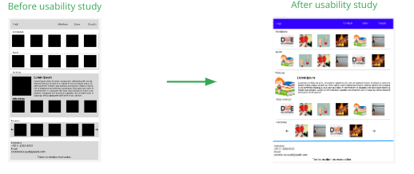
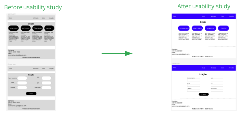

Visão Geral do Projeto
O produto:
Criar um fluxo de adoção de animais de estimação para um abrigo de animais.
Duração do projeto:
1 meses
O problema:
Poucos instituições locais e mais nacional
O objetivo:
Criar sites para instituições locais.
Minha função:
Como gerente do projeto, realizo tudo.
Responsabilidades:
Houve vários desafios, como fazer o wireframe do projeto, onde não tinha ideia, porém com o
passar do tempo houve…
Compreensão o usuário
Pesquisa do usuário:
A pesquisa com nossos usuários, foi de forma satisfatória dando um rumo maior para o nosso
design, deixando satisfeito com que foi realizado no decorrer.
Pontos de dor:
1 - Poucas instituições
As instituições mais famosas de rede nacional, acabam atrapalhando um pouco as que têm na
região.
2 - Várias regiões
Sem locais próximos de anunciar para doação a não em site de vendas.

Personagem: Fábio
Fábio é um gestor de negócios, que precisa de um site simples e confiável,
para poder ajudar as entidades que cuidam de animais.
Mapa da jornada:
Para ajudar a criar um site confiável para poder satisfazer as necessidades de muitas pessoas
que querem ajudar mas não sabem por onde.
Iniciando o design

Wireframes digital:
A lo-fi, tinha a ideia de mostrar onde ficariam os elementos, então apenas para identificar o
que seria em cada espaço. A estrutura foi feita a partir de 6 telas, onde são postas as ideias
iniciais para que possa ter a noção. O designer ficou bem simples, para que o usuário não tenha
dificuldade em realizar as suas ações dentro do site.
Protótipo de baixa fidelidade:
O lo-fi, serve para ter uma ideia das posições e de como irá ficar o App.
Estudo de usabilidade: parâmetros
Study type:
Escala de usabilidade do sistema (SUS)
Localização:
Brasil, remoto
Participantes:
10 participantes
Duração:
5-10 minutos
Estudo de usabilidade:
Descobertas
1 - Pessoas com dificuldade de retornar ao início
2 - Não sabia por onde começar
3 - Dificuldade em fazer a doação.
Refino o design

Mockups:
A parte onde mostra o início, ela se tornou algo simples para que o usuário entenda como que foi
feita a melhorá.

Mockups:
A parte onde mostra a doação, ela se tornou algo simples para que o usuário entenda como que foi feita a melhorá
Alta fidelidade protótipo:
O hi-fi, apresenta uma estrutura simples onde o usuário usa de forma simples e rápida, sem que
tenha o problema de falta de função.
Considerações de acessibilidade:
1 - Com a estruturação adequada do App, o leitor pode ler sem muitos problemas, pois terá um
sequência seguindo a WCAG 3.
2 - Ao utilizar cores neutras, para facilitar pessoas com problemas de vista, em relação a
claridade. Adicionaremos uma função de contraste de cores no App.
3 - Ao usar poucas animações, ajudamos pessoas que têm problemas com a tremedeira em suas
mãos, para evitar toques acidentais e ativar função sem querer.
Daqui para frente
Impacto:
Será de forma que ajudará os animais que estão precisando de um novo lar, para acompanhar uma
nova ideia de amor.
Aprendizado:
Ao criar um protótipo, se aprende desde o começo até o fim, como fazer as pesquisas e trabalhar
com wireframes.
Próximos passos:
1 - Começaria a desenvolver em uma linguagem que o computador entenda, para o cliente ter acesso
real.
2 - Implantaria em alguma instituição, para que possa melhorar o seu atendimento, e ajudar a
doar os animais que estão esperando por um novo dono.
3 - Compartilharia a ideia com os colegas de sala, para poder dar uma melhor performance no
App.
Apresentação, slides
Aprensetação do estudo de caso